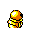

#014
Kakuna
BugPoison
Almost incapable of moving, this Pokémon can only harden its shell to protect itself from predators
Base stats Total 275
HP60
Attack60
Defense70
Speed35
Special50
Details
- Species
- Cocoon
- Height
- 2'00"
- Weight
- 22.0 lb
- Catch rate
- 120
- Base exp
- 71
- Growth
- Medium Fast
Level-up moves
LevelMoveType
StartHardenNormal
StartPoison StingPoison
Lv 9Pin MissileBug
Lv 14Bug BiteBug
Lv 31X ScissorBug
TM / HM
Tmhm